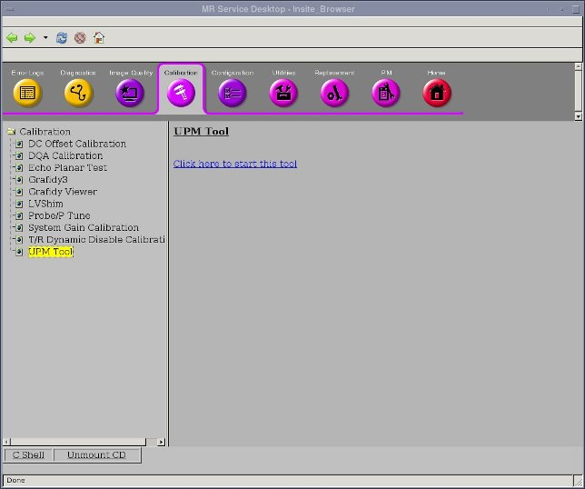
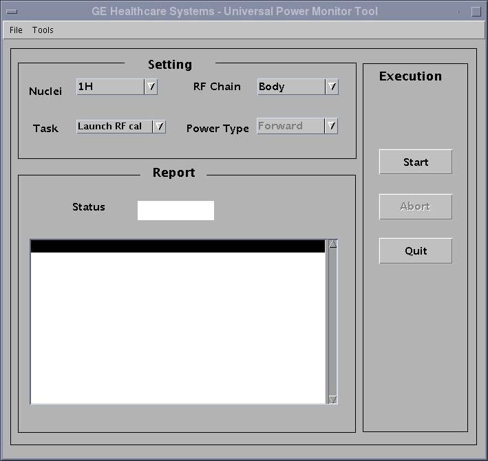
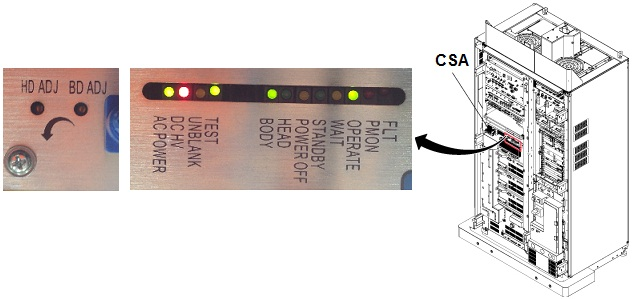
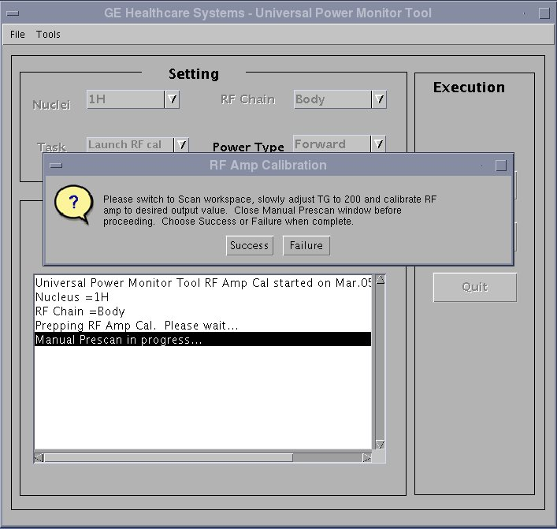
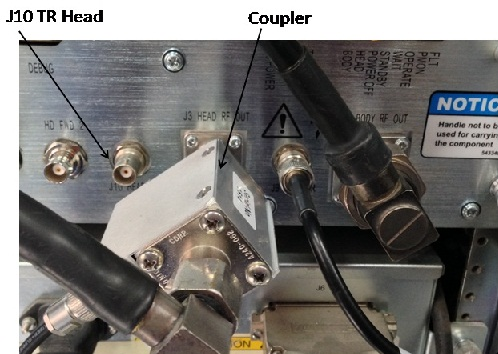
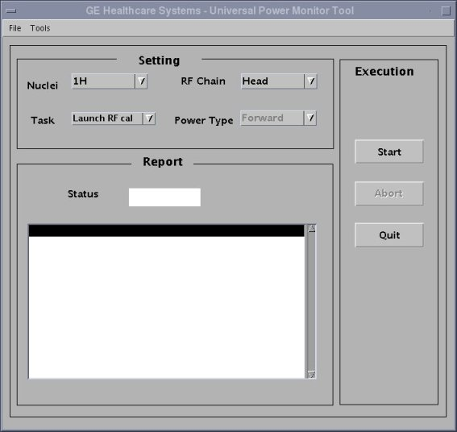
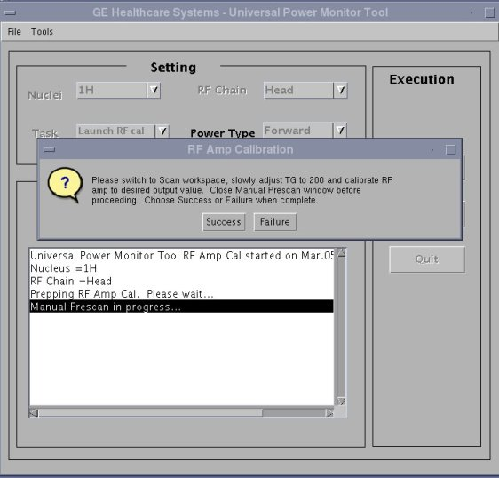
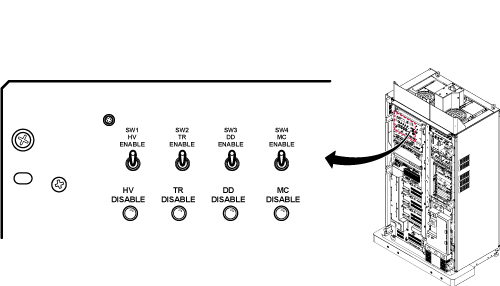

Body and Head Maximum Power Setup and Calibration
Prerequisites
Overview
This procedure describes how to calibrate the CSA in a 1.5T system.
Calibration is done to prevent faults and to make sure that the CSA is outputting the specified 10kW of RF body power and 2kW of RF head power. Adjustments may need to be made if Exciter and/or CSA has been replaced or if any of the measurements taken during the check are found not to meet specifications. References are referred to in the procedure and provide extra information and directions to assist the user with accomplishing the RF power measurement task. General Troubleshooting provides helpful troubleshooting information in the event that a problem is encountered during the RF power check or calibration.
The Body and Head Gain pots are in series with each other. The Body Gain pot is first in the series. The Head Gain pot is factory set so that the head gain is 7dB less (63 dBm) than the body gain (70 dBm).
1 Disabling TR, DD, and RF Input
Procedure
 danger
danger- Verify that the system is idle and all coils have been removed from the magnet bore.
- Remove the front cover of System Cabinet.
- On the front of the Driver Module Lite, disable T/R error reporting
by setting the TR and DD switches to the DISABLE (disable faults)
position.
Figure 1. Driver Module Switch
 note:
note:HV should remain set to Enable.
- Place the RF Enable switch on the DTX Exciter, located in the
top of the System cabinet, into the Disable (down) position. See Figure 2.
Figure 2. RF ENB Switch

 |
2 Setting up
Procedure
- If you are using the RF Power Measurement Kit then calibrate
the scope by referring to the RF Power Measurement Kit laminated card
set.note:
If possible, use the new card set – Part numbers of the set are:
-
Head - Card Number 63. Part number – 46-317724P18
-
Body - Card Number 72. Part number – 46-317724P17
note:Body Mode Only. Card 72 is for 16kW(72dBm) RF Amp. For 10kW(70dBm) RF Amp, it is required to set rotary attenuator to the value on the card - 2dB. For example, if the card shows '8dB', then set to '6dB'. See Figure 4.
- Look in the upper right corner of each card and find the card labeled CAL.
- Configure the scope as in the illustration on the card.
- Follow the directions on the card to calibrate the scope using the 4 dBm calibrator.
-
- If you are not using the RF Power Measurement Kit then complete the Dummy Load and Cables Calibration procedure in Dummy Load and Cables Calibration. If using the scope to measure the RF output power then also make sure that the scope correction factor has been determined for the input channel to be used as described in Scopes with Less Than 300 MHz Bandwidth.
3 Body RF Output Power Calibration
Procedure
- If using the RF Power Measurement Kit then refer to the RF
Power Measurement Kit laminated card set.
- Look in the upper, right corner of each card and find the card
labeled 72 (1.5T Body Output). note:
The body RF output connection is no longer to the non-existent EFB unit, as the older RF Power Measurement Kit cards show, but instead to the J4 output on the front of the CSA Module. An RF adapter is provided in the RF Power Measurement Kit to connect between the 7/16 J4 body RF output and the RF Power Measurement Kit 40 dB N-connector coupler.
- Use DVM to measure resistance of input to the dummy load. Confirm
resistance measures between 50 ohms +/- 5 ohms.note:
If the dummy load is out of spec return the RF Power Measurement Kit or the dummy load for repair. Do NOT proceed with RF amp output calibration.
- Configure the system as shown in the illustration on the card.
- Confirm that the rotary attenuator is set to the correct position
indicated in Figure 4.note:
Body Mode Only. Card 72 is for 16kW(72dBm) RF Amp. For 10kW(70dBm) RF Amp, it is required to set rotary attenuator to the value on the card - 2dB. For example, if the card shows '8dB', then set to '6dB'. See Figure 4
- Look in the upper, right corner of each card and find the card
labeled 72 (1.5T Body Output).
- If using the scope (NOT the RF Power Measurement Kit) to measure power then refer to Alternate Equipment Setup for the proper system body configuration.
4 Scan Setup (Body)
Procedure
- Place the RF Enable switch on the exciter (located on the left side of the System Cabinet) to the enable (up) position.
- Open service browser. Go to calibration UPM Tool Choose “Click
here to start this tool”

- The calibration tool will open. Please choose task as “Launch
RF cal” and RF Chain as “Body”. Clink “Start”

- Two warning message will pop up. Please confirm the answers of the warnings are all yes Click “yes”.
- Go to the scanner window, wait for a while. A new exam will be created, and a manual pre-scan window will open.
- Click “done” to close the manual prescan.
- Select Research Options, then choose Display CVs. In the CV Name window, type “calmode” , and then hit enter. Set current value to 5, then click the Accept key.
5 Adjusting the RF Amplifier Output Power (Body)
Procedure
- In the Scan drop-down list, choose Manual Prescan.
- Select Scan TR.
- Verify Body LED is illuminated on front of RF Amp.
- Set the Transmit Gain to 180. Make sure everything is functioning normally and view the Body RF output waveform on oscilloscope.
- Slowly increase the TG to 200. (If the
amplifier trips, reset the TG at its highest setting before tripping).note:
Check the system center frequency NOW, especially if this is a new installation, and confirm that it consists of 8 digits and that it is correct. The RF amplifier will output a low and distorted RF waveform if center frequency is wrong due to a missing digit.
note:The Power Amplifier should be capable of 0.3dB to 0.4dB more than the required 70Bm RF Output. Improperly adjusted systems will trip if the gain is set above 70dBm creating a “Peak Power Fault”.
note:If the RF Amplifier trips, adjust the Body Gain pot counter clockwise to reduce the RF output power and then increase the TG. Repeat this process until TG = 200 and the body RF output power is 10kW (70dBm).
- Verify the Unblank LED on the front of the CSA Module is ON.
Figure 3. POT locations on CSA module

- If using the RF Power Measurement Kit, refer to the specified
number of divisions printed on the RF Power Measurement Kit card 72
(1.5T Body RF Output) needed to achieve 10kW of RF power output.
Adjust the Body Gain pot on the front of the CSA so that the RF waveform
displayed on the scope meets, but does not exceed, this number of
divisions. See Figure 4.note:
Card 72 is for 16kW(72dBm) RF Amp. For 10kW(70dBm) RF Amp, it is required to set rotary attenuator to the value on the card - 2dB. For example, if the card shows '8dB', then set to '6dB'.
Figure 4. How to re-configure Card72

- If using the oscilloscope procedure (NOT the RF Power Measurement Kit) then read the peak voltage (Vpeak) from the scope display and use the formula below or the Power Calculator Tool Power Calculator Tool to calculate the RF output power. The dummy load and cable loss factors were determined from the procedure in Dummy Load and Cables Calibration. The scope correction factor was determined in Scopes with Less Than 300 MHZ Bandwidth . Adjust the Body Gain pot on the front of the CSA until the RF output calculated from the formula meets, and does not exceed, the 10kW (70dBm) specification. See Figure 3.
- Reduce the TG to 0 (zero) once the RF Output is calibrated to specification.
- Select Done. Go back to service browser
window, click Success to end the exam.

- Put RF ENB switch to Disable (down) position. Disconnect Dummy Load from J4 and reconnect body transmit line. If not continuing to head output adjustment, then put RF ENB switch in Enable (up) position and Re-enable TR and DD Fault switches on front of Driver Module.
6 Head RF Output Power Calibration
Do not perform head output power calibration until body output calibration has been completed.
Procedure
- Verify that the system is idle and all coils have been removed from magnet bore.
- Remove the front cover of the System Cabinet.
- Confirm TR and DD error reporting disabled at Driver Module
by setting disable switches to DISABLE (down) position. See Figure 1.note:
HV should remain set to Enable.
- If using the RF Power Measurement Kit then refer to the RF Power
Measurement Kit laminated card set.
- Look in the upper, right corner of each card and find the card
labeled 63 (1.5T Head Output). note:
The head RF output connection is no longer to the non-existent EFB unit, as the reference cards in some of the older kits show, but instead to the J3 output on the front of the CSA.
- Configure the system as shown in the illustration on the card.
- Confirm that the rotary attenuator is set to the correct position
indicated on the card. note:
To connect the coupler to Head output port, there is a conflict with the cable connecting with J10 HEAD TR.
Remove the cable from J10 and connect first, then connect coupler to Head Output. Then, restore the cable to J10.

- Look in the upper, right corner of each card and find the card
labeled 63 (1.5T Head Output).
- If using the scope (NOT the RF Power Measurement Kit) to measure power, refer to (Alternate Equipment Setup) for the proper system head configuration.
7 Scan Setup (Head)
Procedure
- Place the RF Enable switch on the exciter (located on the left side of the System Cabinet) to the enable (up) position.
- Open service browser. Go to calibration UPM Tool Choose “Click here to start this tool”
- The calibration tool will open. Please choose task as “Launch
RF cal” and RF Chain as “Head”. Clink “Start”.

- Two warning message will pop up. Please confirm the answers of the warnings are all yes Click “yes”.
- Go to the scanner window, wait for a while. A new exam will be created, and a manual pre-scan window will open.
- Click “done” to close the manual prescan.
- Select [Research Options], then choose Display CVs. In the CV Name window, type calmode, and then hit enter. Set current value to 5, then click the Accept key.
8 Adjusting the RF Amplifier Output Power (Head)
Procedure
- On the Scan drop-down list, select Manual Prescan.
- Select Scan TR.
- Set the Transmit Gain to 180. Make sure everything is functioning normally and view the Head RF output waveform on the oscilloscope.
- Slowly increase the TG to 200 (if the amplifier trips, reset TG to its highest setting before tripping).
- If using the RF Power Measurement Kit then refer to the RF Power
Measurement Kit laminated card set.
- Look in the upper, right corner of each card and find the card
labeled 63 (1.5T Head Output). note:
The head RF output connection is no longer to the non-existent EFB unit, as the reference cards in some of the older kits show, but instead to the J3 output on the front of the CSA.
- Configure the system as shown in the illustration on the card.
- Confirm that the rotary attenuator is set to the correct position indicated on the card.
- Look in the upper, right corner of each card and find the card
labeled 63 (1.5T Head Output).
- If using the scope (NOT the RF Power Measurement Kit) to measure
power, refer to (Alternate Equipment Setup) for the proper system head configuration.note:
The Power Amplifier should be capable of 0.3dB to 0.4dB more than the required 63Bm RF Output. Improperly adjusted systems will trip if the gain is set above 63dBm creating a “Peak Power Fault”.
note:If the RF Amplifier trips, adjust the Head Gain pot counterclockwise to reduce the RF output power and then increase the TG. Repeat this process until TG = 200 and the head RF output power is 2kW (63dBm).
- Verify the Unblank LED on the front of the CSA Module is ON.note:
If measurement power is unusually low or unstable, then reconfirm CV setting as shown inStep Adjusting the RF Amplifier Output Power (Body).
- If using the RF Power Measurement Kit then refer to the specified number of divisions printed on the RF Power Measurement Kit card 63 (1.5T Head RF Output) needed to achieve 2kW of RF power output. Adjust the Head Gain pot on the front of the CSA so that the RF waveform displayed on the scope meets, but does not exceed, this number of divisions. See Figure 3.
- If using the oscilloscope procedure (NOT the RF Power Measurement Kit) then read the peak voltage (Vpeak) from the scope display and use the formula below or the Power Calculator Tool to calculate the RF output power. The dummy load and cable loss factor was determined from the procedure in Dummy Load and Cable Calibration. The scope correction factor was determined in Scopes with Less Than 300 MHz Bandwidth. Adjust the Head Gain pot on the front of the CSA module until the RF output calculated from the formula meets, and does not exceed, the 2kW (63dBm) specification. See Figure 3.
- Select Done. Go back to service browser
window, click success to end the exam.

- Restore the Hardware. Put RF ENB Switch in the Disable (down) position. Disconnect Dummy Load from J3 and reconnect head transmit line. Re-enable TR and DD Fault Switches on front of driver. See Illustration 1. Put RF ENB Switch in the Enable (up) position.
9 General Reference Material
10 Finalization
Procedure
- warning
- Verify the system is not scanning and the scan desktop icon is displaying the “Idle” message.
- See Figure 5. On the front of the Driver module Do the following:
- SW2 in the UP (TR Enable) position.
- SW3 in the UP (DD Enable) position.
Figure 5. Driver Module Lite Switches

- Remove all test equipment.
- Verify the Body RF cable is connected.
- Verify the Head RF cable is connected.
- Re-install the cabinet covers.note:
WHENEVER THE “CALMODE” CV IS CHANGED A TPS RESET MUST BE DONE BEFORE ATTEMPTING TO SCAN. THIS IS NECESSARY IN ORDER TO SET THE MGD BACK INTO IMAGING MODE. FAILURE TO DO THIS WILL RESULT IN THE LOSS OF RECEIVE SIGNAL AND AUTOPRESCAN FAILURES.
- Perform a TPS Reset to set the MGD back to imaging mode so that the system will be able to scan. Failure to do this will result in Autoprescan failures due to a loss of receive signal.
- Successfully complete one body scan.
- Successfully complete one head scan.
|